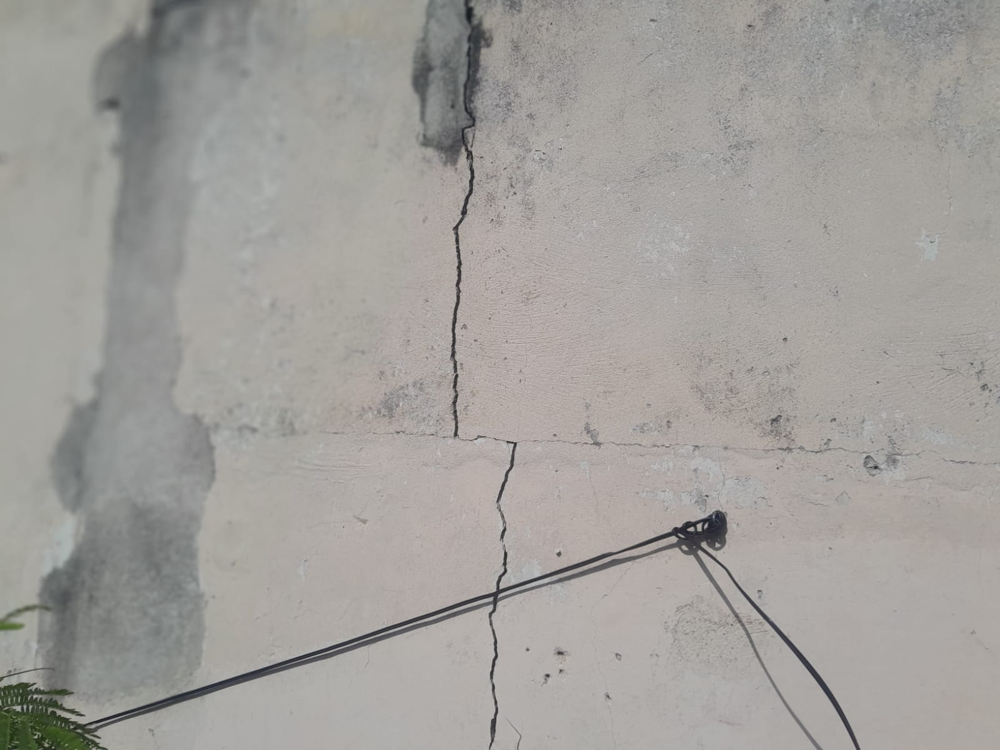
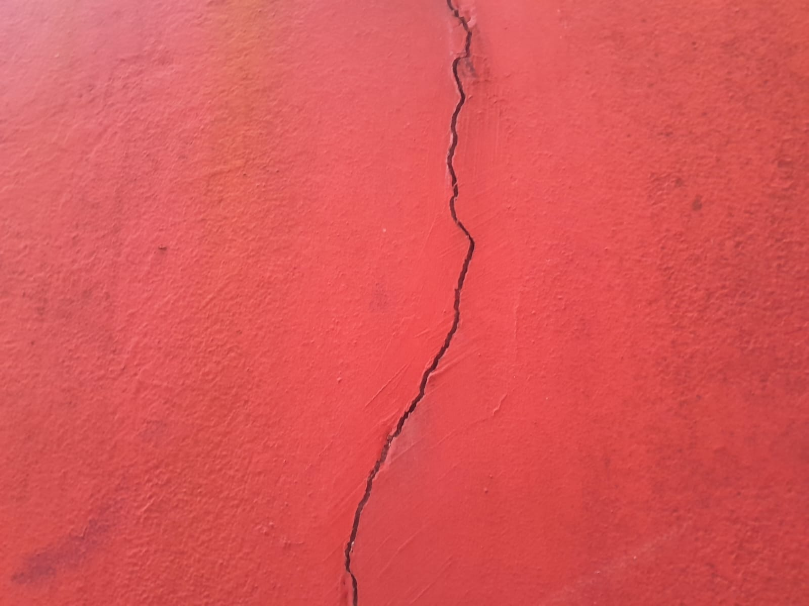
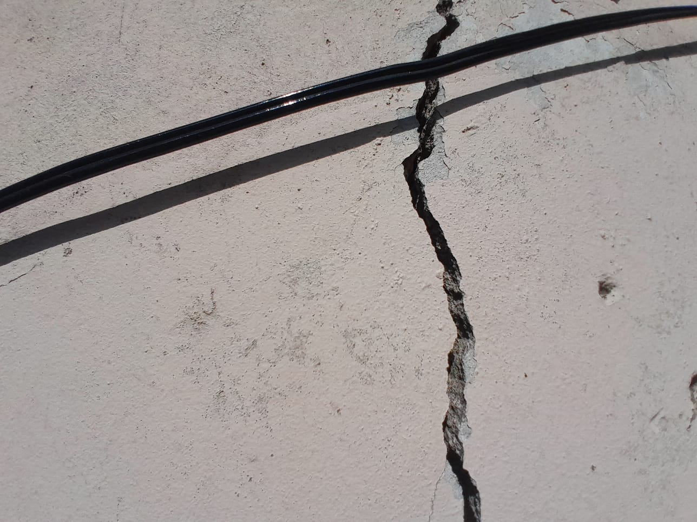

Laudos e Vistorias com Excelência Técnica
Análise detalhada do imóvel, obra ou reforma para prevenir dores de cabeça e prejuízos futuros. Engenheiro responsável com ART e laudos 100% dentro das Normas Brasileiras.
Porque deve emitir um laudo técnico?
Seu imóvel merece o melhor cuidado! Nossos Laudos Técnicos oferecem uma análise detalhada das condições do seu imóvel, identificando e resolvendo possíveis problemas antes que eles se tornem grandes dores de cabeça. Atendendo às Normas Brasileiras vigentes e protegendo o seu patrimônio
Conheça nossos serviços
- Laudo de Reforma e Plano de Obra conforme Norma Brasileira
- Laudo Técnico de Segurança e Estabilidade
- Laudo de Inspeção Predial
- Vistoria Locativa
- Vistoria de Imóvel Novo
- Plano de Manutenção
- Assessoria Condominial
Confira as etapas para obter de forma simples um Laudo para seu imóvel
Etapa 1
Entre em contato conosco e relate a sua necessidade
Etapa 2
Realizaremos a coleta de dados específicos para a elaboração do Laudo, levando em conta as particularidades da sua solicitação.

Etapa 3
Com base nos dados e análise técnica, elaboraremos o Laudo descrevendo o diagnóstico, conclusões e prescrições da situação.
Etapa 4
Após a emissão do Laudo, o documento será enviado para você em até 24 horas, assinado e cadastrado no CREA através da ART.
Vistorias realizadas

Trincas

rachadura

Rachadura

Acompanhamento de obra
Dúvidas frequentes
Um laudo é um documento técnico resultante da análise de um assunto específico. A ART é uma Anotação de Responsabilidade Técnica, emitida pelo CREA. Já o RRT é o Registro de Responsabilidade Técnica, emitido por um profissional vinculado ao CAU (Conselho de Arquitetura e Urbanismo). Todo serviço prestado por um profissional registrado em um conselho regulamentador (como o CREA ou CAU) precisa ser acompanhado de uma ART ou RRT para possuir valor legal.
Sim, um laudo técnico elaborado por um engenheiro civil registrado é um documento oficial e pode ser usado em disputas judiciais, processos de seguro e outras situações legais.
Identificando problemas precocemente, evitando reparos caros no futuro, e orientando manutenções preventivas que prolongam a vida útil do imóvel, resultando em menos despesas ao longo do tempo.
O valor para a elaboração de um Laudo Técnico varia conforme a complexidade, tipo de laudo e prazo de entrega, com preços a partir de R$ 299,00 (ART e taxa NÃO inclusas). O laudo é geralmente concluído em até 24 horas, podendo exceder esse prazo em casos específicos, sempre com o acordo do cliente.
Laudos Técnicos são importantes em diversas situações, como reformas, compra ou venda de imóveis, identificação de problemas estruturais, disputas judiciais, inspeções periódicas e manutenção preventiva.
Os benefícios incluem a prevenção de problemas judiciais, aumento da vida útil do imóvel, economia de custos futuros, valorização do imóvel, garantia da segurança e detecção e resolução de anomalias estruturais.